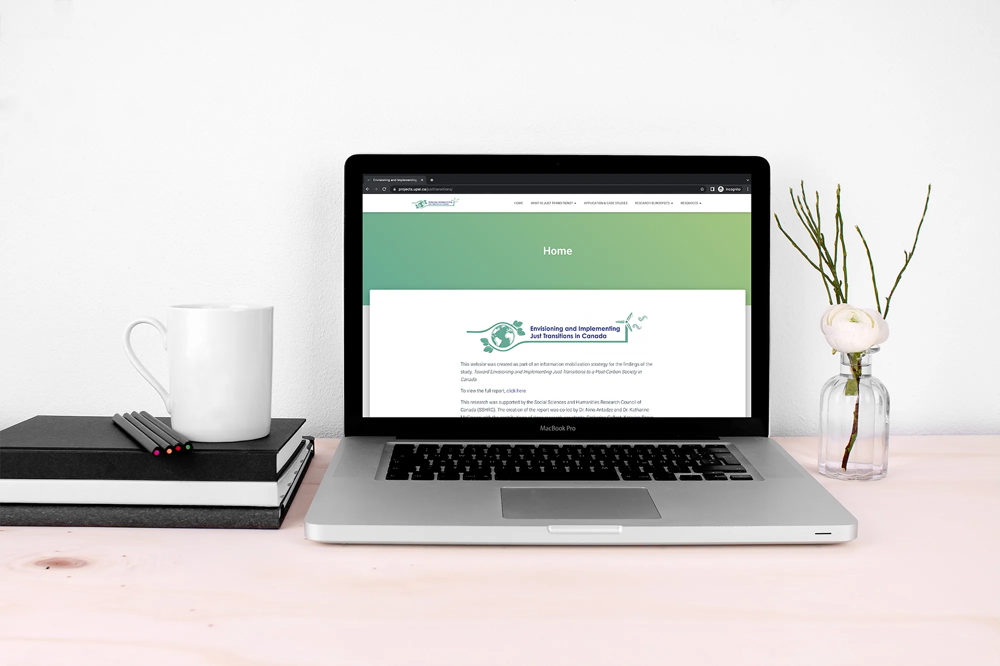
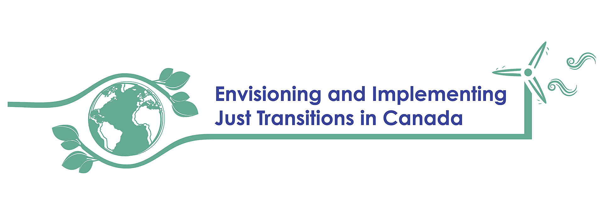
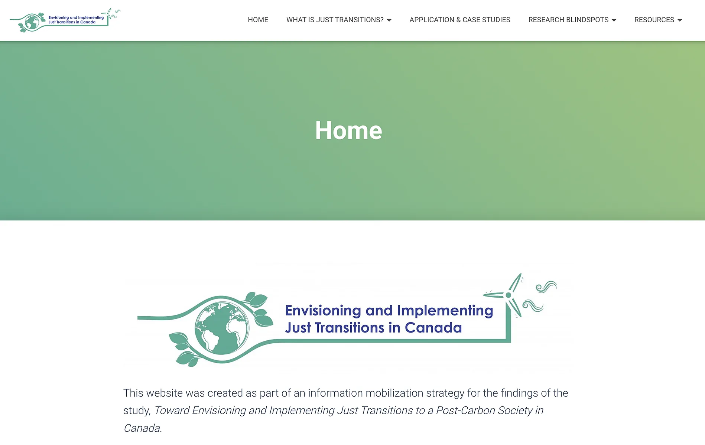

Just Transitions
Background
I was brought onto a study as a research assistant co-lead by Dr. Katharine McGowan from Mount Royal University and Dr. Nino Antadze from the University of Prince Edward Island. In my role, I was tasked to create an information mobilization strategy to be able to get the research findings from their study to the public on Just Transitions. Just Transitions in a holistic model of transitioning to renewable energy resources that ensures people currently working in vulnerable sectors, such as coal mining, oil, and gas, are not left behind. What I came up with is turning the report into a website that can be accessed by anyone to ensure that there is no gatekeeping of information.
Branding
I used a simple branding strategy, coming up with a colour palette that incorporated earth tones and creating a logo using that colour palette.

Website
Live at projects.upei.ca/justtransitions.
